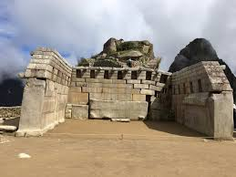

秘魯馬丘比丘
歷史資料
馬丘比丘（西班牙語：Machu Picchu；奇楚亞語：Machu Piqchu，其意為「古老的山」），又譯麻丘比丘，是一座建於前哥倫布時期（15世紀）的印加帝國城市遺蹟，位於秘魯南部的秘魯東部山脈，庫斯科西北方80公里處，整個遺址高聳在海拔2,430公尺（7,970英尺）的山脊上，俯瞰著烏魯班巴河谷。
與瑪雅文明相比，由於印加文明沒有書面語言的紀錄，直到19世紀末期才有對於發現該遺址的紀錄。考古學家認為，馬丘比丘是薩帕·印卡帕查庫蒂（1438-1472）建造的，由於獨特的位置、地址特點和發現時間較晚（在1911年），馬丘比丘成了印加帝國最為人所熟悉的標誌。它通常被稱為「印加失落之城」。
馬丘比丘的建築為古典印加風格，並以拋光的砌石墻作為柱體結構。城鎮保存完整的三個設施則為拴日石（Intihuatana）、太陽神殿和三窗廟。為了讓遊客更好地了解城市最初的樣子，大部分建築都經過了復原重建。到1976年，馬丘比丘約有30%的區域已經恢復，直到至今依然進行恢復工程。1983年，馬丘比丘古神廟被聯合國教科文組織定為世界遺產，且為文化與自然雙重遺產。2007 年，馬丘比丘被評為世界新七大奇蹟之一。但與此同時，馬丘比丘也面臨著遭旅遊業破壞的擔憂。

太陽神殿
馬丘比丘最具標誌性的建築之一，太陽神殿擁有精美的石雕，曾用於天文觀測。其半圓形設計和戰略性位置使得太陽在至暑至冬時照亮神殿。

太陽繫石
被稱為'太陽繫石'，這個儀式石頭被認為是印加人用作天文時鐘或日曆。它在冬至期間與太陽精確對齊。


三窗神殿
這座神殿以其三個梯形窗戶而聞名，可以欣賞到周圍山脈的壯麗景色。這是馬丘比丘的主要建築之一，展示了印加人的建築技巧。